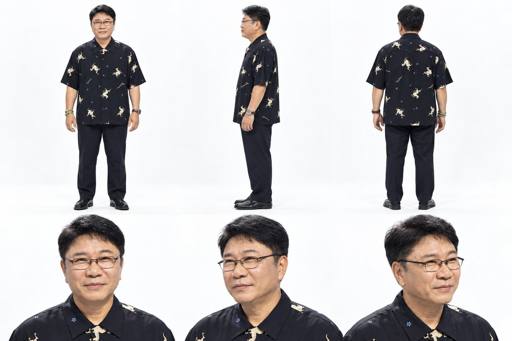
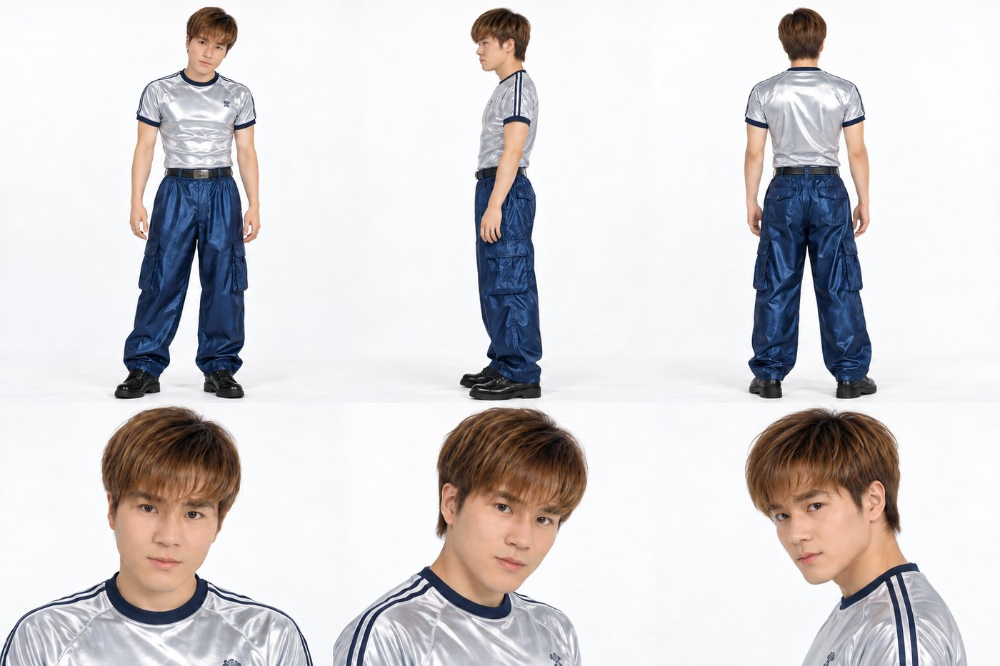
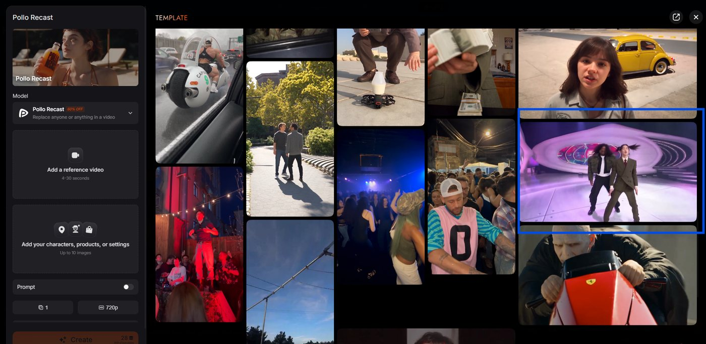
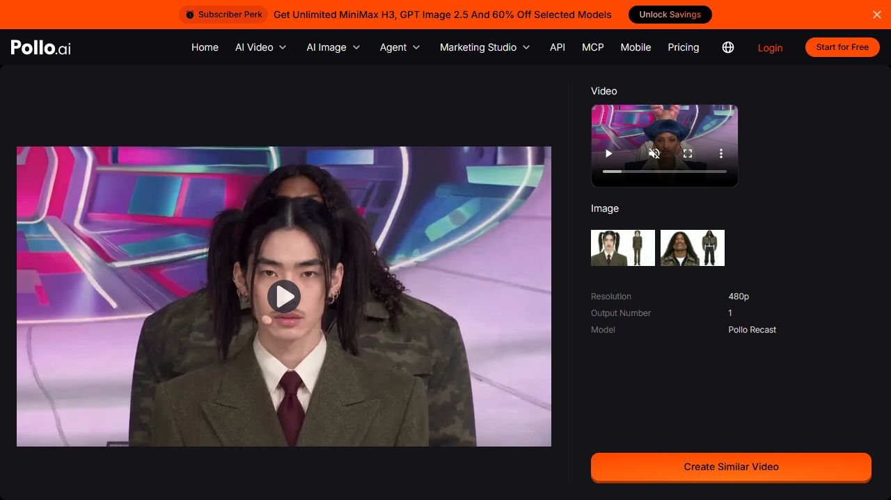
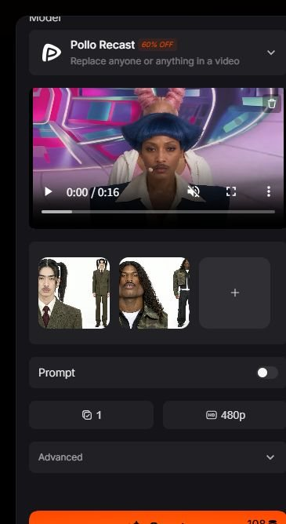
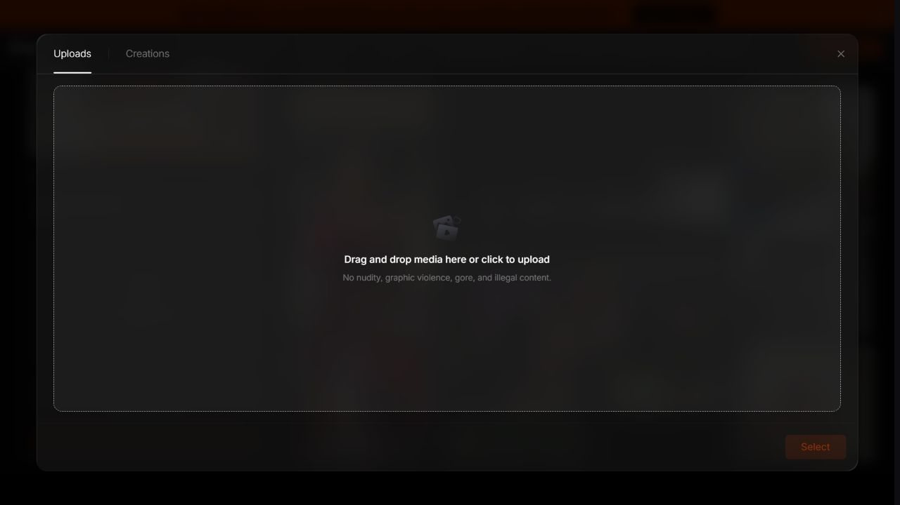
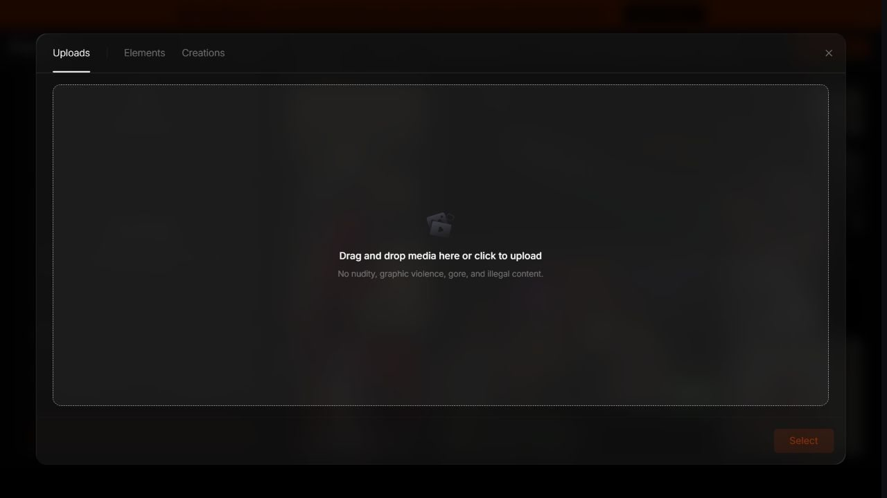
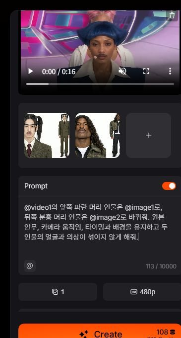

neon AI영상 만드는 법 | 캐릭터 시트 + Pollo Recast
인물 사진으로 캐릭터 시트를 만들고 Pollo Recast로 댄스 영상 속 인물을 바꾸는 방법.
사용 툴 · Pollo AI (Recast)
요즘 보이는 댄스 영상, 원하는 인물이 추는 버전으로 만들어보고 싶다면? 💃
인물 사진으로 캐릭터 시트 만들기 → Pollo Recast에서 템플릿 또는 영상 선택 → 바꿀 인물 넣기 → 생성 순서로 따라 해보세요.
아래는 NEON 댄스 패러디를 만드는 예시예요. 보라색 무대에서 두 남자가 춤추는 Neon Girl Dance 템플릿으로 시작해볼게요.
1. 원하는 인물의 사진을 준비해요
얼굴이 또렷한 사진을 골라주세요. 가능하면 정면 얼굴과 전신 사진을 함께 준비하면, 유지하고 싶은 헤어스타일과 의상을 전달하기 좋아요.
여러 인물을 사용할 때는 인물마다 따로 캐릭터 시트를 만들어주세요.
2. 캐릭터 시트를 한 장으로 만들어요
사용하는 이미지 생성 AI에 사진을 첨부한 뒤 아래 문구를 복사해서 넣어주세요.
캐릭터 시트는 한 인물의 얼굴과 전신을 여러 방향에서 보여주는 참고 이미지예요.
복사해서 쓰는 캐릭터 시트 프롬프트
첨부한 사진 속 인물로 실사 캐릭터 시트 한 장을 만들어줘.
사진 속 얼굴 생김새, 나이대, 헤어스타일, 체형, 의상과 액세서리를 최대한 유지해줘.
흰 배경에 부드럽고 균일한 조명을 사용하고, 모든 컷이 같은 인물로 보이게 해줘.
한 장 안에 아래 6개 컷을 배치해줘.
- 위쪽: 전신 정면 / 전신 측면 / 전신 후면
- 아래쪽: 얼굴 정면 / 얼굴 왼쪽 45도 / 얼굴 오른쪽 45도
전신은 머리부터 신발까지 잘리지 않게, 팔은 몸에서 살짝 떨어뜨린 편안한 자세로.
얼굴 클로즈업은 눈·코·입이 잘 보이게 크게 배치해줘.
원본 사진에서 보이지 않는 부분은 기존 의상과 자연스럽게 이어지도록 구성해줘.
모든 컷의 얼굴, 머리, 의상을 통일하고, 글자·로고·배경 소품은 추가하지 마.
캐릭터 시트 예시 ①

캐릭터 시트 예시 ②

저장 전에 얼굴이 컷마다 달라지지 않았는지, 안경·헤어·의상이 통일됐는지 확인해요. 시트에 얼굴이 너무 작게 나왔다면, 얼굴 클로즈업도 별도 이미지로 준비해두세요.
3. Pollo Recast에 접속해요
10% 할인 코드: ONJIRC · 2026-11-15까지 유효
사이트에 접속해 로그인한 뒤, Pollo Recast 화면을 열어주세요.
왼쪽은 영상과 이미지를 넣는 제작 영역, 오른쪽 TEMPLATE는 사용할 수 있는 예시 모음이에요.
4. NEON 영상을 골라요
아래 파란색 박스로 표시한 보라색 무대의 두 남자 템플릿을 선택해요. 템플릿 이름은 Neon Girl Dance예요.

방법 A · 템플릿으로 시작하기
- 위 링크를 열거나 오른쪽 TEMPLATE에서 표시한 NEON 템플릿을 선택해요.
- 상세 화면에서 예시 영상과 참고 이미지를 확인해요.
- Recreate 또는 Create Similar Video를 눌러 제작 화면으로 불러와요.

템플릿을 불러오면 16초 원본 영상과 기본 참고 이미지 2장이 입력돼요. 카드 속 두 남자는 결과 예시이며, 제작 화면에는 앞쪽 파란 머리·뒤쪽 분홍 머리 인물의 원본 영상이 들어와요. 기본 참고 이미지는 다음 단계에서 내 캐릭터 시트로 교체해주세요.

방법 B · 원하는 영상 직접 넣기
템플릿 대신 A2O LITE 'NEON' 공식 영상의 첫 10초처럼 특정 구간을 사용하고 싶다면, 해당 구간의 영상 파일을 준비해주세요.
- Add a reference video를 눌러요.
- Uploads에서 가운데 업로드 영역을 클릭하거나 파일을 드래그해요.
- 첫 10초로 잘라둔 NEON 영상 파일을 올리고, 선택 창에 Select가 보이면 눌러 적용해요.

현재 화면에는 4~30초 영상을 넣을 수 있다고 안내돼 있어요. 이번처럼 특정 파트만 만들고 싶다면, 그 구간을 미리 잘라 파일로 준비해주세요.
5. 바꿀 인물의 캐릭터 시트를 넣어요
- Add your characters, products, or settings 또는 참고 이미지 영역의 +를 눌러요.
- Uploads에서 앞서 만든 캐릭터 시트를 업로드해요.
- 템플릿에 기본 이미지가 들어 있다면, 그 이미지를 교체하거나 제거한 뒤 내 시트를 넣어요.

현재 화면 기준으로 참고 이미지는 최대 10장까지 넣을 수 있어요. 두 인물로 만들 때는 각자의 시트를 따로 올리고, 어떤 원본 인물을 누구로 바꿀지 구분해 주세요.
6. 필요한 설명을 적고 생성해요
Prompt는 선택 입력이에요. 원하는 인물과 유지할 부분을 더 분명하게 전달하고 싶다면 켜서 짧게 적어주세요.
입력창의 @를 이용해 업로드한 영상과 이미지를 지정할 수 있어요. 아래 예시의 번호는 실제 첨부 순서에 맞춰 바꿔주세요.
한 인물 교체용 예시
Replace the person in @video1 with the person in @image1.
Keep the original dance, camera movement, cuts, timing, and background.
Preserve the reference face, hairstyle, and outfit.
뜻: 영상 속 인물을 참고 이미지의 인물로 바꾸고, 춤·카메라 움직임·컷 전환·타이밍·배경과 참고 인물의 얼굴·헤어·의상을 유지해 달라는 요청이에요.
선택한 NEON 템플릿 · 두 인물 교체용 예시
@video1의 앞쪽 파란 머리 인물은 @image1의 인물로,
뒤쪽 분홍 머리 인물은 @image2의 인물로 바꿔줘.
두 인물의 얼굴과 의상이 서로 섞이지 않게 유지해줘.
원본의 춤, 카메라 움직임, 컷 전환, 타이밍과 배경을 유지해줘.
다른 영상을 직접 넣었다면 파란 머리·분홍 머리라는 설명을 실제 원본 인물의 특징으로 바꿔주세요. "왼쪽 사람"만 쓰기보다는 머리나 의상, 처음 등장하는 위치를 함께 적으면 대상이 더 분명해져요.

위 캡처는 선택한 NEON 템플릿에서 Prompt를 켠 상태예요. 캡처 속 기본 참고 이미지를 내 캐릭터 시트로 교체한 뒤 출력 개수·해상도·필요 크레딧을 확인하고 Create를 눌러주세요. 필요한 크레딧은 영상과 설정에 따라 달라질 수 있어요.
7. 결과를 확인하고 저장해요
완성된 영상을 재생해 얼굴, 손, 의상과 인물끼리 겹치는 구간을 확인한 뒤 다운로드해요. 필요하면 영상 편집 앱에서 음악과 자막을 더해 마무리하면 돼요.